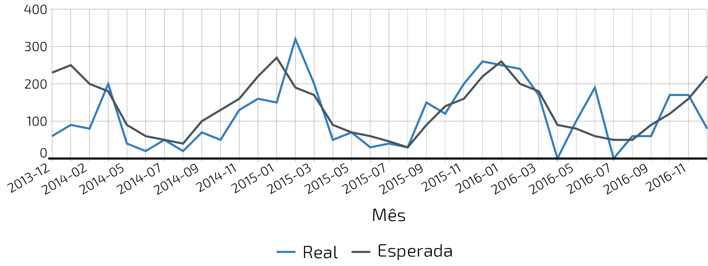

O que o nosso batimento cardíaco, um terremoto ou a variação das ações de uma empresa na bolsa de valores possuem em comum? Os batimentos cardíacos podem ser monitorados a partir de um sinal bioelétrico cujo gráfico é representado em um eletrocardiograma, as ondas sísmicas produzidas por um terremoto podem ser observadas a partir do registro de um sismógrafo e as variações dos valores das ações de uma empresa percebidas ao longo do tempo podem ser facilmente visualizadas em um gráfico.
Como nos fenômenos descritos acima, muitas situações e decisões do dia a dia dependem do reconhecimento de uma relação entre duas grandezas e da análise de como a variação de uma delas influencia na variação da outra (Por exemplo, a distância percorrida e o tempo transcorrido, a área de um polígono e o comprimento de seus lados, a absorção de um medicamento pelo organismo humano e o tempo desde a sua ingestão, valor da conta de energia elétrica e consumo, quantidade de vereadores e a população etc). O tema funções trata da relação entre grandezas, identificando um tipo especial de relação. Funções são uma ferramenta matemática importante para descrever, analisar e tomar decisões em diversas situações.
As funções, de maneira geral, conectam grandezas, medidas, conjuntos numéricos e até variáveis que não podem ser quantificadas, ou seja, não numéricas, como, por exemplo, as variáveis qualitativas estudadas pela Estatística (classe social, cor dos olhos, local de nascimento, gênero etc).
Função é um dos conceitos centrais da Matemática, e sua importância transcende os limites dessa ciência, sendo fundamental para descrever fenômenos em diversas áreas do conhecimento, não só nas mais próximas, como a Física, a Química, ou as Engenharias como também em Biologia, Geografia, Sociologia, e em situações cotidianas diversas, como será exemplificado nas atividades a seguir.
A noção de função não surgiu ao acaso. É um instrumento matemático indispensável para o estudo quantitativo dos fenômenos naturais, tendo sua origem nos estudos desenvolvidos por Kepler (1571–1630) e Galileu (1564–1642) sobre os movimentos dos planetas e a queda dos corpos pela ação da força da gravidade, respectivamente. Nesses estudos era preciso medir grandezas, identificar regularidades e obter relações que oferecessem uma descrição matemática simples.
A aplicação da Matemática nas mais diversas áreas é feita, na maioria das vezes, por meio da noção de modelo matemático. Um modelo matemático permite representar uma determinada situação ou fenômeno a partir de variáveis e de relações entre essas variáveis. Portanto, funções são fundamentais tanto na concepção e construção de um modelo matemático como no estudo desses modelos.
As chuvas são a principal fonte de água para os reservatórios que abastecem as grandes cidades. Com base em dados passados, constrói-se uma média mensal esperada de chuvas. Em períodos em que a chuva real é menor do que o esperado pode-se observar uma diminuição da quantidade de água armazenada no sistema.
O gráfico a seguir apresenta a variação pluviométrica (em milímetros) da chuva real e da chuva esperada no Sistema Cantareira, que abastece a região metropolitana de São Paulo, no período de dezembro de 2013 (2013-12) a novembro de 2016 (2016-11).

De acordo com o gráfico acima:
Considere a sequência de números ilustrada acima. Ela é conhecida como a sequência dos números triangulares. O -ésimo número triangular, , é igual a quantidade total de círculos congruentes necessários para formar um triângulo equilátero cujo lado tem círculos. Por exemplo, o quarto número triangular é , porque são necessários círculos congruentes para formar um triângulo cujo lado tem, desses círculos.
Imagine um arranha-céu de andares cujas diferentes alturas que correspondem a alguns andares estão representadas na tabela abaixo.
| Número do Andar | Garagem (0) |
1
|
2
|
3
|
4
|
…
|
10
|
…
|
|
|
| Altura (metros) | -1 |
3
|
7
|
11
|
15
|
…
|
|
…
|
|
91
|
Considere que a altura de um andar é medida a partir do nível da rua até o piso desse andar e que a altura entre os andares seja sempre a mesma, conforme o esquema abaixo.
Vamos identificar juntos quais são as características comuns presentes em cada uma das situações anteriores. Em todas elas há pelo menos dois conjuntos bem determinados cujos elementos estão sendo relacionados. Nessa relacão, cada elemento de um desses conjuntos está associado a um único elemento do outro conjunto.
Na Atividade: Pluviometria no Sistema Cantareira, um dos conjuntos se refere ao tempo e é determinado pelos meses do ano, no período de dezembro de 2015 a novembro de 2016. O outro é um conjunto numérico que deve conter todos os possíveis valores para o índice pluviométrico do Sistema Cantareira em milímetros. A relação representada no gráfico pela linha azul associa a cada ano-mês o índice de chuva real naquele período. Já a relação representada pela linha vermelha associa a cada mês-ano o índice de chuva esperada naquele período. Observe que, em ambos os casos, para cada mês-ano é associado um único índice pluviométrico.
Na Atividade: números triangulares no plano, um dos conjuntos tem como elementos as ordens dos termos da sequência, indicadas de maneira geral por . O outro conjunto deve conter todos os possíveis números triangulares . Assim, a cada ordem está associado, sem ambiguidade, o número triangular .
Por fim, na Atividade: Arranha-céu temos cada andar do prédio sendo relacionado com sua altura até o nível da rua.
Nas três relações apresentadas, cada elemento de um conjunto está associado a um único elemento de um conjunto . Uma relação com essas propriedades é chamada função.
Função
Dizemos que uma relação entre os elementos de dois conjuntos não vazios, e , é uma função de em se todo elemento do conjunto estiver relacionado a um único elemento do conjunto .
Assim, para cada deve existir um único elemento que está associado a pela função . Esse elemento é também denotado por :
O conjunto é chamado domínio da função , o conjunto é chamado contradomínio de e o subconjunto de formado pelas imagens de todos os elementos de é chamado conjunto imagem da função .
De maneira geral, escreve-se:
Por exemplo, na Atividade: Pluviometria no Sistema Cantareira, se é a função que associa a cada ano-mês o índice de chuva real naquele período, nos informa que o índice de chuva real observada na região do sistema Cantareira no mês de março do ano de 2014 foi de milímetros.
Em uma função de em , a dependência estabelecida entre as variáveis e permite que seja identificada como “variável dependente” e como “variável independente”, uma vez que os valores assumidos por são determinados em função da variação de no domínio. Na atividade “Arranha-céu” por exemplo, a variável independente é aquela que representa os andares e a variável dependente é a altura do andar.
Observação: A definição de uma função de em exige que a cada elemento corresponda uma imagem e que não haja ambiguidade na determinação dessa imagem, ou seja, que ela seja única. Asssim, nem toda relação de em ‘B é uma função. Por exemplo, a relação que associa a cada pessoa o número de seu telefone não é função, pois a imagem pode não ser única, ou seja, há ambiguidade: algumas pessoas têm mais de um número de telefone. E além disso, nem todas as pessoas têm telefone.
unto com seus colegas, reflita sobre a definição que acabamos de ver. Vocês conseguem pensar em outros exemplos de relações do seu dia a dia que possam ser consideradas funções? Descrevam algumas delas e compartilhem com o restante da turma, destacando os conjuntos domínio e contradomínio dessas funções.
A imagem a seguir, que foi retirada do aplicativo Google Maps, exibe o trânsito na ponte Rio-Niterói e seus acessos em um determinado dia e hora. Várias informações podem ser observadas a partir dos elementos apresentados. Por exemplo, as cores nas vias informam a velocidade média dos veículos que trafegam por elas, conforme a legenda na parte inferior; a distância entre dois pontos quaisquer do mapa pode ser estimada usando a escala exibida no canto inferior direito. Gráficos como esse são produzidos a partir das relações entre diversas informações coletadas.
A tabela a seguir mostra os dados coletados sobre o tempo gasto pelos veículos (em média) para atravessar a ponte, ao longo de um dia.
| Período do Dia | Tempo (min) | Cor | Velocidade Média (km/min) |
| 5:00 - 7:00 | 13 |
| |
| 7:00 - 9:00 | 18 |
| |
| 9:00 - 11:00 | 15 |
| |
| 11:00 - 13:00 | 15 |
| |
| 13:00 - 15:00 | 16 |
| |
| 15:00 - 17:00 | 16 |
| |
| 17:00 - 19:00 | 23 |
| |
| 19:00 - 21:00 | 14 |
| |
| 21:00 - 23:00 | 13 |
| |
Na atividade anterior, observam-se diferentes relações entre os dados. Por exemplo, para cada tempo de travessia é possível associar uma única cor e uma única velocidade média. Da mesma maneira, a cada velocidade média está associada uma única cor e um único tempo de travessia. No entanto, a uma mesma cor é possível associar tempos diferentes e velocidades médias diferentes.
No contexto da atividade anterior são observados diferentes conjuntos de dados: O conjunto dos tempos de travessia da ponte, ; O conjunto das cores que compoõem a escala, Verde, Laranja, Vermelho, Vinho; e o conjunto de velocidades obtidas,‘C‘. Considere as diferentes relações de dependências estabelecidas entre esses conjuntos. Quais são funções?
| Relação | É função? | Se não, por que? |
| De A em B |
| |
| De B em A | ||
| De A em C |
|
|
| De C em A |
|
|
| De B em C |
|
|
| De C em B |
|
|
Toda relação de um conjunto em um conjunto pode ser identificada por um conjunto de pares ordenados. Nesse caso, cada associação entre elementos do conjunto e elementos do conjunto fica representada por um par ordenado tal que o elemnto do conjunto ocupa a primeira posição do par e o correspondente elemento do conjunto a segunda posição.
Por exemplo, se consideramos a relação dos números reais em si mesmo que, a cada número real, associa o seu quadrado, os pares ordenados indicam elementos que estão relacinados. Já os pares ordenados e , formados por números reais, não indicam números associados pela mesma relação, uma vez que não é quadrado de , não é quadrado de e não é o quadrado de .
Como funções são um tipo especial de relação, a mesma ideia se estende para representação das funções. Assim, os pares ordenados de uma função serão da forma em que e .
Considere a relação formada por todos de números naturais tais que é múltiplo de . Assim, , , e são pares ordenado dessa relação, pois é múltiplo de , é múltiplo de e de e é múltiplo de . No entanto, e são pares ordenados de números naturais, mas não são pares dessa relação.
Cada ponto do gráfico a seguir representa uma das seguintes pessoas.
*Adaptado de The Language of Functions and Graphs, Shell Centre for Mathematical Education Publications Ltd., 1985.
Quando nos deparamos com uma função é fundamental identificarmos os conjuntos domínio e contradomínio, e a maneira como os elementos desses conjuntos estão relacionados. Tal maneira pode ser muito variada, no entanto, principalmente quando os conjuntos envolvidos são numéricos, é comum considerar como contradomínio o conjunto . Por isso, daqui por diante, quando estivermos considerando funções numéricas, o contradomínio será igual a .
Em muitos casos, a forma de associação entre os elementos é dada por uma expressão analítica. Vejamos alguns exemplos.
Para calcular o perímetro de um quadrado de lado usa-se a expressão . Percebe-se então que o perímetro está relacionado com o lado. A partir daí pode-se definir a função perímetro:
Da mesma forma a área de um quadrado de lado é dada por , que permite definir a função:
A variável pode assumir qualquer valor dentro do intervalo que é o domínio da função . Se quisermos saber o valor do perímetro do quadrado de lado cm, basta substituirmos por 5 na expressão de . Ficamos assim com
A área do quadrado de lado cm é
A fórmula de Lorentz já foi muito utilizada pelos médicos para o cálculo do “peso ideal” , em kg, em função da altura , em centímetros, do paciente.
em que vale 4 para homens e vale 2 para mulheres.
Que tal usar a fórmula acima para calcular o seu peso ideal?
Imagine que um objeto é solto, a partir do repouso, de uma altura de metros e percorre uma trajetória vertical em queda livre. Da Física, sabemos que sua altura em metros medida a partir do solo, em função do tempo em segundos, quando desprezamos a resistência do ar, é dada por
em que representa a aceleração da gravidade em .metros por segundo ao quadrado.
Fazer a variável tempo assumir o valor segundos na expressão de significa que estamos medindo a altura no início da contagem do tempo, ou seja a altura inicial do corpo. Nesse caso teremos
Se por exemplo, quisermos saber em quanto tempo o corpo chegará ao solo, o que devemos fazer? Como a medição é feita a partir do solo, dizer que o objeto chegou ao solo é o mesmo que dizer que sua altura é igual a 0. Portanto, precisamos descobrir o valor da variável , de maneira que . A partir da expressão de e aproximando por , obtemos , donde concluímos que aproximadamente.
Considere as funções , , e , todas de domínio , tais que:
Determine o valor de:
| Função | Valor |
| quando | |
| quando | |
O reservatório representado a seguir tem a forma de um cone cuja altura é e a base é um círculo de raio . O volume em litros de água no reservatório pode ser estimado a partir altura do nível da água (em metros) de acordo com a seguinte expressão:
A posição (em quilômetros), medida a partir de um referencial, de um veículo que se desloca segundo um movimento retilíneo uniformemente variado (MRUV) é dada em função do tempo (medido em horas) pela seguinte expressão:
Vimos que para que uma relação de em seja uma função não pode haver:
Elementos no conjunto sem correspondente em ; Ambiguidade na determinação de correspondente em .
Determine se cada uma das relações apresentadas a seguir é função. Justifique suas respostas a partir das condições e .
Considere a seguinte lista de expressões algébricas.
Veja que, em algumas das expressões, a variável independente não pode assumir alguns valores, por exemplo, na letra a) não pode assumir valores negativos. Complete a tabela abaixo com o maior conjunto domínio possível que cada uma das funções pode ter e o correspondente conjunto imagem.
| Expressão | Domínio | Imagem |
| Tempo (s) | Distância (m) |
| 5 | |
| 10 | |
| 15 | |
| 20 | |
Considerando que a velocidade da atleta é constante ao longo dos 100 metros responda as seguintes perguntas.
Apresentam-se, a seguir, quatro afirmações. De acordo com o gráfico, apenas uma é verdadeira. Assinale-a com X, explicando por que motivo cada uma das demais opções é falsa.
( ) A Ana percorreu metade da distância andando e a outra metade correndo.
( ) A Ana percorreu maior distância andando do que correndo.
( ) A Ana esteve mais tempo correndo do que andando.
( ) A Ana iniciou o percurso correndo e terminou-o andando.
Segundo informações do Big Data Business, as palavras estimulam o lado esquerdo do cérebro e são um recurso essencial para a manutenção da memória. No entanto, as imagens são ainda mais eficazes, porque elas conseguem ativar os dois lados do cérebro simultaneamente e, assim, permitem o resgate de ideias e informações com maior precisão e agilidade. Especialmente quando se quer analisar grande quantidade de dados, apresentá-los em uma imagem ou em um gráfico, pode favorecer a comunicação.
Represe25ntar graficamente conjuntos de dados e suas relações pode fazer toda a diferença para transmitir informações. Há vários tipos de gráficos, cada um tem a sua particularidade e serve para transmitir as informações de forma específica. Nesta seção iremos estudar a representação gráfica de funções.
Vamos considerar a seguinte situação:
Uma empresa resolve lançar uma ação promocional na internet usando uma hashtag. Um mês após o lançamento, o presidente dessa empresa resolve analisar o impacto da ação na rede. Para isso ele pede a um de seus funcionários que prepare um relatório sobre o número de vezes que a hashtag foi mencionada nas redes sociais em cada dia durante aquele mês. O funcionário resolveu apresentar os dados das seguintes duas formas:
Uma função, essencialmente, relaciona duas ou mais grandezas ou variáveis, de forma que são obtidos pares , em que pertence ao domínio da função e . Perceba que a ordem em que os termos que compõem o par são apresentados é importante. Em matemática, chamamos esse tipo de objeto de par ordenado, eles são objetos fundamentais para a compreensão do gráfico de uma função.
No caso de funções reais de variável real, isto é, cujos domínio e contradomínio são o conjunto dos números reais (ou subconjuntos dele) tanto como serão números reais.
A representação geométrica mais comum para esses pontos, e que você provavelmente já conhece, é no plano cartesiano. Essa representação tem como base duas retas numéricas perpendiculares que se intersectam em suas origens conforme a figura abaixo.
As retas que compõem um sistema cartesiano são chamadas de eixos do plano cartesiano. O eixo em que são registradas as primeiras coordenadas do par é chamado de eixo das abscissas. O outro eixo, em que são registradas as segundas coordenadas do par é chamado de eixo das ordenadas.
Já vimos alguns exemplos de funções em atividades anteriores, vamos explorá-los um pouco mais.
Represente, no plano cartesiano, o conjunto de pontos que correspondem aos pares ordenados , em que é o -ésimo número triangular.
Leonardo mora a km da escola onde estuda e utiliza o transporte escolar, que o busca na porta de sua casa. Em um certo dia, o percurso de Leonardo até sua escola foi assim: Ele estava na porta de casa às horas, como de costume, mas o transporte escolar atrasou, passando em sua casa somente às . Leonardo entrou na van e sentou no penúltimo lugar vago. Ainda faltava Marina. “Ela mora a km da minha casa!”, lembrou Leonardo. Às em ponto, o transporte escolar chegou à casa de Marina, que já estava pronta aguardando para embarcar. Para tentar compensar o atraso, o motorista resolveu tomar um atalho, mas a estratégia não funcionou. Às precisou ficar parado por minutos em frente a uma cancela aguardando um trem de carga passar. Finalmente, às chegaram à escola, minutos antes do sinal tocar.
No plano cartesiano a seguir, o eixo horizontal indica o tempo em minutos e o eixo vertical a distância percorrida em quilômetros. Os pontos marcados correspondem às distâncias percorridas por diversos estudantes da escola a cada minutos no período das às da mesma manhã descrita na situação acima.
É hora de organizar as ideias sobre representação gráfica de uma função. Vimos que, para representar graficamente as funções, os pares ordenados são fundamentais. Cada par identifica as grandezas ou variáveis relacionadas e a ordem no par distingue o papel de cada uma delas: elemento do domínio, abscissa, e imagem, ordenada. Sendo assim, a representação gráfica de uma função exige: a identificação das variáveis do problema e a identificação da relação estabelecida entre as variáveis.
Para funções reais de variável real, isto é, funções cujo domínio é um subconjunto de e o contradomínio é , sua representação gráfica no plano cartesiano será o conjunto dos pares ordenados em que pertence ao domínio da função.
Os conjuntos domínio e imagem ficam evidenciados na representação gráfica de uma função a partir dos eixos coordenados. Observe a representação gráfica a seguir, em que estão destacados conjuntos sobre os eixos. Qual deles você identifica como domínio? A que conjunto corresponde o outro?
Arthur, Caetano, Gael, Levi e Pedro utilizam a mesma avenida para ir à escola a cada manhã. Levi vai com seu pai de carro, Arthur de bicicleta e Gael caminhando. Os demais variam, a cada dia, a forma como percorrem o trajeto. O mapa a seguir mostra a posição da casa de cada um em relação à escola.
Os pontos marcados no plano cartesiano abaixo fornecem informações sobre a jornada de cada criança na última segunda-feira.
‘‘Adaptado de *The Language of Functions and Graphs, Shell Centre for Mathematical Education Publications Ltd., 1985.
Dentre os gráficos apresentados a seguir identifique aquele que melhor descreve os dados apresentados em cada uma das tabelas seguintes.
| Tempo (minutos) | 0 | 5 | 10 | 15 | 20 | 25 | 30 |
| Temperatura (C) | 90 | 79 | 70 | 62 | 55 | 49 | 44 |
| Peso (quilos) | 3 | 4 | 5 | 6 | 7 | 8 | 9 |
| Tempo (horas) | 2,5 | 3 | 3,5 | 4 | 4,5 | 5 | 5,5 |
| Tempo (horas) | 1 | 2 | 3 | 4 | 5 | 6 | 7 |
| Álcool no sangue (mg/100ml) | 90 | 75 | 60 | 45 | 30 | 15 | 0 |
| Tempo de gestação (meses) | 2 | 3 | 4 | 5 | 6 | 7 | 8 | 9 |
| Comprimento do bebê (cm) | 4 | 9 | 16 | 24 | 30 | 34 | 38 | 42 |
Adaptado de The Language of Functions and Graphs, Shell Centre for Mathematical Education Publications Ltd., 1985.
Associe cada uma das situações apresentadas a seguir a um dos gráficos dados abaixo. Explique sua escolha e escreva, em cada um dos eixos, o que eles representam.
Adaptado do artigo Michal Ayalon & Anne Watson & Steve Lerman (2015). Progression Towards Functions: Students’ Performance on Three Tasks About Variables from Grades 7 to 12.
bserve as figuras abaixo
O que os gráficos da primeira linha têm em comum? E as da segunda linha?
Agora observe-os por coluna. Você consegue identificar algo em comum?
Função crescente e função decrescente
Uma função é dita crescente quando os valores das imagens, , aumentam à medida em que os valores de aumentam, ou seja, para tem-se .
E é dita decrescente quando os valores das imagens, , diminuem à medida em que os valores de aumentam, ou seja, para tem-se .
Seja a função real cuja representação gráfica é apresentada a seguir.
funcoesaluno-figure27.pdf
A partir da representação gráfica calcule os seguintes valores:
| Notação | Valor |
| quando | |
| quando | |
bserve o gráfico da função real dada pela expressão . Veja que ele possui interseções com o eixo das abscissas e com o eixo das ordenadas. Qual procedimento você utilizaria para determinar esses pontos de interseção?
Os valores de para os quais há interseção com o eixo das abscissas são chamados de zeros da função.
A seguinte tabela é utilizada para o cálculo do Imposto de Renda para Pessoa Física (IRPF).
Tabela do IRF - Vigência a partir de 01/04/2015
(Medida Provisória 670/2015 convertida na Lei 13.149/2015)
| Base de cálculo (R$) | Alíquota (%) | Parcela a deduzir do IR (R$) |
| Até | - | - |
| De até | 7,5 | |
| De 2 até | 15 | |
| até | 22,5 | |
| Acima de | 27,5 | |
Por esta tabela, um trabalhador cujo rendimento é inferior a R$ está isento do imposto de renda. Já um trabalhador com rendimento de R$ tem um desconto, em reais, de de (450,00) menos a dedução de 354,80, isto é, deverá pagar de importo de renda o valor R$ .
Determine o imposto que deverá ser pago por um trabalhador cujo rendimento seja:
Segundo a tabela IRF, determine as alíquotas de desconto que estão sendo aplicadas a cada um destes trabalhadores e qual o salário de cada um deles.
Você deseja trocar o plano do seu telefone e ao consultar a sua operadora tem a opção de escolher entre dois planos: plano Prata e plano Ouro. No seu plano atual, você paga R$ por 500MB de internet e os dados além disso custam R$ por MB.
O plano Ouro cobra R$ por dados ilimitados e o plano Prata tem a mesma estrutura do seu plano atual. Os valores cobrados pelo plano Prata estão representados no gráfico a seguir.
Desde o ano de 2015, as contas de energia passaram a trazer uma novidade: o Sistema de Bandeiras Tarifárias, que apresenta as seguintes modalidades: verde, amarela e vermelha - as mesmas cores dos semáforos - e indicam se haverá ou não acréscimo no valor de energia a ser repassada ao consumidor final, em função das condições de geração de eletricidade. Cada modalidade apresenta as seguintes características:
Bandeira verde: condições favoráveis de geração de energia. A tarifa não sofre nenhum acréscimo;
Bandeira amarela: condições de geração menos favoráveis. A tarifa sobre acréscimo de R$ para cada quilowatt-hora (kWh) consumidos;
Bandeira vermelha — patamar 1: condições mais custosas de geração. A tarifa sofre acréscimo de R$ para cada quilowatt-hora (kWh) consumido.
Bandeira vermelha — patamar 2: condições mais custosas de geração. A tarifa sofre acréscimo de R$ para cada quilowatt-hora (kWh) consumido.
Texto extraído da página da ANEEL em 28/03/2020
https://www.aneel.gov.br/bandeiras-tarifárias
O sistema de coordenadas abaixo contém os gráficos para as funções que relacionam o preço a pagar pela energia em relação ao consumo em quilowatt-hora (kWh) para cada uma das bandeiras tarifárias, em uma cidade vizinha. Com base nas informações do gráfico a seguir, responda:
A rede social virtual Facebook é um grande sucesso. O Facebook criado por Mark Zuckerberg em outubro de 2003, com o nome de Facemash, quando ele era um estudante do segundo ano em Harvard. Inicialmente visitantes geraram visualizações de fotos em suas primeiras horas online. Em fevereiro de , agora com o nome de Thefacebook, ele já contava com a participação de mais da metade dos alunos de Harvard, e um mês depois, estudantes das Universidades de Stanford, Columbia, Yale, Boston, Nova Iorque e MIT tiveram acesso à rede social criada por Mark Zuckerberg. A partir de setembro de , funcionários de várias empresas, dentre elas Apple e Microsoft, puderam ter acesso ao Facebook e no final de o serviço ficou disponível para qualquer pessoa maior de anos e com um endereço válido de e-mail.
A tabela a seguir mostra o número de usuários ativos do Facebook em janeiro dos anos de a .
| Ano | Número de usuários | Crescimento percentual |
| 2004 | 5 | – |
| 2005 | 1.000.000 | |
| 2006 | 5.500.000 | 450% |
| 2007 | 12.000.000 | |
| 2008 | 70.000.000 | |
| 2009 | 150.000.000 | |
| 2010 | 370.000.000 | |
| 2011 | 600.000.000 | |
| 2012 | 800.000.000 | |
| 2013 | 1.056.000.000 | |
| 2014 | 1.228.000.000 | |
| 2015 | 1.317.000.000 | |
Imagine que queremos investigar o crescimento anual do número de usuários. E, a partir da investigação formular um modelo que nos permita fazer previsões sobre a base de usuários para os próximos anos.
em que representa o tempo decorrido desde , isto é, para tem-se , e é o valor em milhões de usuários ativos no Facebook naquele ano. Com a ajuda de uma calculadora científica, use a expressão acima para calcular a estimativa do número de usuários nos anos de e de , e em seguida compare com a tabela.
Os dados reais para os meses de janeiro de e são e , respectivamente. Isso significa que apesar do modelo descrever de forma satisfatória o comportamento do crescimento do número de usuários até o ano de , para os anos seguintes ele não se mostra adequado. Existia de fato uma tendência para diminuição do crescimento, no entanto essa trajetória foi possivelmente modificada por ações que foram tomadas pela empresa ao perceber tal comportamento.
Situações como essa são bastante comuns em Modelagem Matemática. O modelo se mostra adequado sob certas condições, mas quando outras variáveis são consideradas (investimento em propaganda, alteração no algoritmo que escolhe as atualizações que serão exibidas para cada usuário, etc) ele pode perder sua acurácia, momento em que se fazem necessárias revisões.
Um dos conceitos mais importantes para a segurança na internet nos dias de de hoje é o que chamamos de criptografia (do grego criptos = escondido, grafia = escrita). Segundo o site wikipedia ela é o estudo dos princípios e técnicas pelas quais a informação pode ser transformada da sua forma original para outra codificada, de forma que possa ser conhecida apenas por seu destinatário (detentor da “chave secreta”), o que a torna difícil de ser decifrada por alguém não autorizado. Em outras palavras, cria-se um código que pode ser facilmente desfeito (decodificado) mas apenas por aqueles que conhecem a codificação.
Considere a seguinte maneira de codificar o alfabeto
| Original | A | B | C | D | E | F | G | H | I | J | K | L | M | N | O | P | Q | R | S | T | U | V | W | X | Y | Z |
| Código | P | Q | R | S | T | U | V | W | X | Y | Z | A | B | C | D | E | F | G | H | I | J | K | L | M | N | O |
A codificação acima pode também ser representada em um gráfico em que no eixo horizontal estão as letras originais e no vertical os seus respectivos códigos.
Você deve ter percebido que a codificação é uma função do conjunto das letras do alfabeto em si mesmo: todas as letras precisam ter um código e uma mesma letra não pode ter mais de um código associada a si.

Como construir uma caixa de volume máximo?
Vamos utilizar uma folha de cartolina quadrada de lado cm para construir uma caixa sem tampa. Para isso, cortamos quadrados nos quatro cantos da cartolina e dobramos as partes retangulares restantes, para formar os lados da caixa. O objetivo é obter a caixa com o maior volume possível.
| x |
|
|
|
|
|
|
|
|
|
|
| V(x) |
|
|
|
|
|
|
|
|
|
|